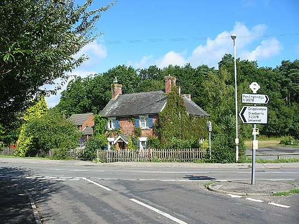

A series of historical articles

Alderholt is a large village and civil parish nestled in the east of Dorset but situated just 3 miles (4.8 km) west of Fordingbridge in Hampshire. The parish includes the small hamlets of Crendell and Cripplestyle and was home to 3,195 residents at the time of the 2021 census.
The articles in the archive were written by local resident Adrian King and originally published in the Parish Magazine.